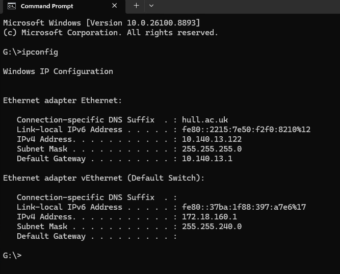
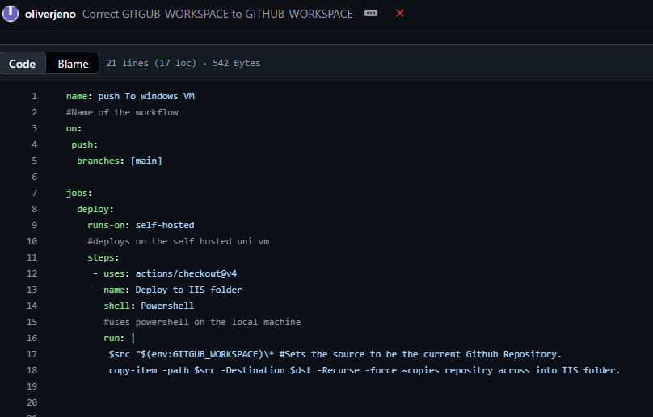

The first thing I did is ipconfig which checks if the VMs are part of the same virtual network. This is especially important when remembering the ip4 as its important when running github actions.

I then created a new github actions action called “push to vm” the code inside takes the code form my vm and pushes it to github automatically.
